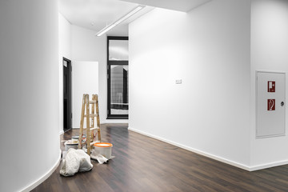
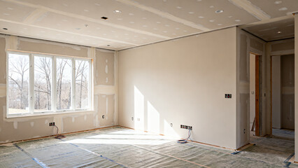

Gewerbe- und Großprojekte
Für Hausverwaltungen, Büros und Bauträger: termintreue, saubere Malerarbeiten – auch bei laufendem Betrieb, außerhalb der Geschäftszeiten und über mehrere Wohneinheiten hinweg.
Worum es geht

Bei gewerblichen Projekten zählt vor allem eines: Verlässlichkeit beim Termin. Ob Treppenhaus im Mehrfamilienhaus, Büro während des laufenden Betriebs oder Erstausstattung mehrerer Wohnungen im Neubau – wir planen verbindlich, arbeiten sauber und dokumentieren die Abnahme nachvollziehbar.
Für wen geeignet: Für Hausverwaltungen, Eigentümergemeinschaften, Büros und Praxen sowie Bauträger und Generalunternehmer in Mannheim und Rhein-Neckar-Region.
Ihr Nutzen auf einen Blick
- Termintreue als Kernversprechen – darauf bauen Ihre Abläufe auf
- Kapazität auch für größere Projekte mit mehreren Gewerken parallel
- Saubere Dokumentation und nachvollziehbare Abnahme als Standard
Was wir konkret anbieten
Hausverwaltungen: Treppenhäuser & Mehrfamilienhäuser
Wir koordinieren Termine mit mehreren Parteien und arbeiten zügig und sauber, auch während das Haus bewohnt bleibt. Zugänge und Treppen bleiben begehbar, Abdeckung und Reinigung gehören zum Standard.
Büro- und Praxisrenovierung
Damit Ihr Betrieb nicht stillsteht, arbeiten wir auf Wunsch außerhalb der Geschäftszeiten oder am Wochenende. Mit emissionsarmen Farben halten wir die Geruchsbelastung gering, sodass Räume schnell wieder nutzbar sind.
Neubau-Erstausstattung
Für Bauträger und Generalunternehmer übernehmen wir die Komplettmalerarbeiten mehrerer Wohneinheiten. Termintreue ist hier entscheidend, weil der gesamte Bauablauf darauf aufbaut – wir halten zugesagte Termine ein.
Der Ablauf
Aufnahme & Angebot
Wir erfassen Umfang und Termine und erstellen ein belastbares Angebot.
Terminplanung
Abstimmung mit Parteien, Mietern oder Bauablauf – verbindlich geplant.
Ausführung
Saubere Arbeit, auch im laufenden Betrieb und außerhalb der Geschäftszeiten.
Abnahme & Dokumentation
Gemeinsame Abnahme mit nachvollziehbarer Dokumentation.
Beispiele aus unserer Arbeit


Jetzt Gewerbeprojekt anfragen
Oder Angebot für ein Großprojekt anfordern. Wir besichtigen kostenlos und erstellen Ihnen ein verständliches Festpreisangebot.
Jetzt Gewerbeprojekt anfragen Kurzfristig? ☎ 0621 1234567